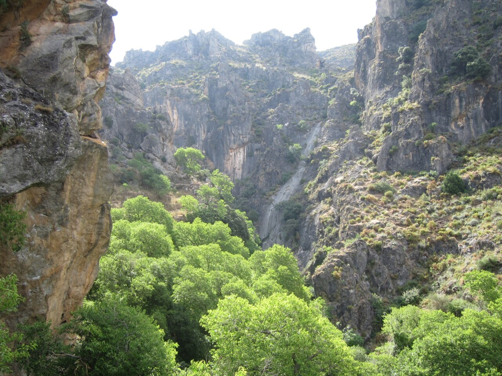
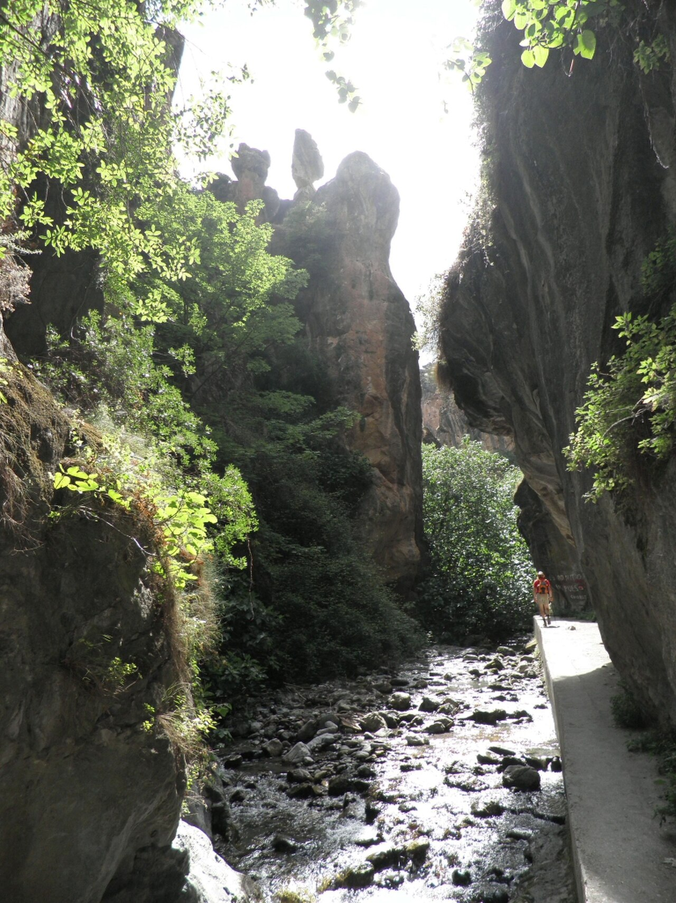

Escapada a Granada & Sierra Nevada
Alta montaña a 2.150 m, cañón de puentes colgantes en Monachil, secretos libres de la Alhambra, tardeo en Granada y la gran noche de chuletón y vino en el apartamento.


Apartamento Base: Dúplex Alya (Pradollano)
Ver en AirbnbDúplex de 90 m² reformado íntegramente en 2022 con vistas espectaculares a la montaña y balcón exterior. Situado en la zona media-alta de Sierra Nevada (a 400 m de pistas y del telesilla Parador; a 50 m de la parada de bus interurbano). Consta de 2 habitaciones, 2 baños completos, salón comedor, cocina equipada, Smart TV y Wi-Fi de alta velocidad.
Planificación Integral
Selecciona cada pestaña para consultar el itinerario por días, el presupuesto global o el checklist de reservas.

Salida puntual de Ontinyent
Salida con la batería al 100%. Tomamos la CV-81 hacia Villena y enlazamos la A-33 en dirección Jumilla / Murcia, conectando después con la A-91 y A-92N hacia Baza y Guadix.
Parada en Supercharger Guadix
Ubicado en el Hotel Restaurante Abades Guadix (A-92 km 294). Llegamos con ~18% de batería tras 345 km. Conectamos 25 minutos para cargar al 85%, ideal para estirar las piernas y tomar un café rápido.
Llegada a Sierra Nevada & Check-in
Instalación en el Airbnb en la zona media-alta de Pradollano. A 400 m del telesilla urbano y 50 m del bus. Sensación inmediata de aire puro alpino y silencio de alta montaña.
Cena de bienvenida & Primeras cervezas
Cena informal relajada: podemos bajar a la plaza de Pradollano a cenar en una taberna local (o picar algo reconfortante en el apartamento) con las primeras cervezas frescas para inaugurar el puente.

Descenso hacia Monachil
Bajamos el puerto de montaña hacia el precioso pueblo de Monachil. En el descenso por la A-395, la frenada regenerativa recargará unos 3-4 kWh en la batería de manera gratuita. Aparcamos en el parking de El Molino / Era de Portachuelo.
Ruta Senderista de Los Cahorros de Monachil
Una de las rutas más divertidas y espectaculares de Andalucía. Recorremos el desfiladero esculpido por el río Monachil, cruzando puentes colgantes suspendidos sobre el vacío (el más largo mide 63 m), cascadas, pasos de roca caliza donde hay que agacharse agarrados a grapas de hierro y la mítica Cueva de las Palomas.

Almuerzo Tradicional en Monachil
Mesa reservada en el Restaurante Los Cerezos o El Puntarrón. Comida casera auténtica: berenjenas fritas con miel de caña de Frigiliana, choto al ajillo tradicional, remojón granadino (ensalada de naranja, bacalao y aceitunas) y carnes a la brasa con patatas a lo pobre.
Aprovisionamiento Gourmet para el Chuletón
Aprovechamos el paso por el pueblo o Cenes de la Vega para entrar en una carnicería tradicional y comprar los chuletones de vaca vieja madurada, embutidos caseros, buen pan de pueblo y carbón/madera si usamos barbacoa exterior.
Subida a Pradollano & Tarde de relax
Regreso al apartamento. Ducha caliente, ropa cómoda, música ambiente, unas copas de vino o cerveza admirando las cumbres desde la terraza y noche de descanso para recargar energías.

Descenso a Granada & Parking
Bajamos cómodamente desde Sierra Nevada y dejamos el coche en el Parking de la Alhambra (en lo alto de la colina, súper cómodo y directo para entrar a pie por los accesos libres).
El Recinto Monumental Libre de la Alhambra
Sin gastar un solo euro en reventas, recorremos todo lo que es de acceso público y 100% gratuito en la Alhambra:
- Puerta de la Justicia & Puerta del Vino: El majestuoso acceso militar del siglo XIV con su arco de herradura y su laberinto defensivo.
- Palacio de Carlos V: El icónico patio circular renacentista de dos plantas con columnas dóricas y una acústica prodigiosa.
- Museo de la Alhambra: Situado en la planta baja del palacio (gratis para ciudadanos UE), con piezas nazaríes originales, yeserías, capiteles y cerámica andalusí.
- Parador de San Francisco: Antiguo convento donde reposaron los Reyes Católicos. Tomamos un café en su terraza con vistas al Secano y las murallas.

Bajada a Plaza Nueva & Ruta de Tapeo Legendaria
Bajamos a pie por el bosque de la Alhambra hacia Plaza Nueva. Momento de vivir la tradición granadina del tapeo con consumición:
- Bodegas Castañeda: Tablas calientes/frías de ibéricos y su famoso vermut artesano de la casa.
- Bar Los Diamantes: Templo del pescaíto frito crujiente servido al segundo con la caña de cerveza.
- Bar Ávila: Jamón asado legendario con su jugo caliente.


Paseo de los Tristes & Carrera del Darro
Caminamos junto al murmullo del río Darro, con las torres de la Alhambra alzándose sobre el acantilado. Si apetece, subida al Mirador de la Placeta de Carvajales o San Nicolás para contemplar la luz dorada del atardecer.
Tardeo & Cócteles en Granada
Nos movemos a la zona de tardeo: subimos al rooftop B-Heaven (Barceló Carmen) con vistas 360° panorámicas, buena música y cócteles prémium; o nos sumergimos en el ambiente vibrante de las terrazas de Calle Ganivet y Plaza Bib-Rambla.
La Cena Memorable: Carmen de San Miguel
El gran momento gastronómico de la noche en el Restaurante Carmen de San Miguel (o Carmen de Aben Humeya). Mesa con vistas privilegiadas a la Alhambra y Granada totalmente iluminadas. Cocina andaluza vanguardista, excelente bodega y un marco imposible de olvidar.
Regreso a Sierra Nevada
Recogemos el coche en el parking y subimos plácidamente por la A-395 hasta nuestro apartamento en Pradollano para descansar.

Despertar tardío & Desayuno alpino
Sin alarmas ni prisas. Café recién hecho, tostadas con tomate, aceite y jamón contemplando las montañas iluminadas por el sol otoñal.
Subida a la Hoya de la Mora & Virgen de las Nieves
Subimos en coche 5 km desde Pradollano hasta la Hoya de la Mora, a 2.500 metros de altitud. Vistas colosales de la pirámide del Pico Veleta (3.398 m) y la Virgen de las Nieves. Paseo suave por las lomas de alta montaña respirando aire puro y contemplando el mar de nubes.


Aperitivo al sol en Pradollano
Bajamos a la plaza de Pradollano a tomar el vermut y cañas en una terraza soleada con vistas a las pistas. Picoteo ligero para reservar apetito para la gran cena de la noche.
Tarde de apartamento, juegos & desconexión
Momento perfecto para estar tranquilos en el apartamento: siesta, juegos de cartas o mesa, música agradable de fondo y empezar a acondicionar la cocina/parrilla para la velada.
El Gran Homenaje: Chuletón de Vaca Vieja & Vinos Tintos
La velada que todos recordaremos. Menú preparado mano a mano entre amigos:
- Entrantes: Jamón de Trevélez cortado fino, cecina de vaca, queso añejo de Montefrío y almendras fritas al punto de sal.
- El Plato Fuerte: Chuletones de vaca vieja madurada marcados a fuego vivo en plancha de hierro fundido/parrilla, rematados con escamas de sal Maldon, pimientos de padrón y patatas asadas con romero.
- La Bodega: Selección de tintos prémium (Vinos de Granada como Muñana o Calvente, más un gran Ribera del Duero).
- Sobremesa: Horas de historias, anécdotas, risas y copas sin mirar el reloj y con la calidez del hogar.
Check-out en el Airbnb
Recogida de equipaje y salida de Pradollano. Iniciamos el descenso de la carretera de montaña aprovechando la frenada regenerativa.
Parada en Guadix & Supercharger
Parada en el Supercharger Guadix. Conectamos 20-25 minutos para meter suficiente carga y llegar directos a Ontinyent. Tiempo de sobra para ver las emblemáticas Casas Cueva de Guadix o tomar un aperitivo de despedida.
Autovía directa hacia Ontinyent
Ruta plácida por la A-92N y A-33. Llegada a Ontinyent a media tarde con tiempo de sobra para deshacer maletas, descansar y arrancar la semana con las pilas totalmente cargadas.
Plan Presupuestario Global
Estimación detallada de costes compartidos para el grupo de 4 personas durante los 4 días completos.
| Concepto | Detalle | Total Grupo (4p) | Por Persona |
|---|---|---|---|
| Recargas en ruta | Superchargers Guadix ida y vuelta (~60 kWh) | 24 € | 6 € |
| Parkings | Parking Alhambra + Parking Granada Centro | 40 € | 10 € |
| Almuerzo Monachil (Viernes) | Restaurante tradicional Los Cerezos / Puntarrón | 100 € | 25 € |
| Tapeo Granada (Sábado) | Ruta Bodegas Castañeda, Diamantes y Ávila | 80 € | 20 € |
| Tardeo & Cócteles | Rooftop B-Heaven / Terrazas Ganivet | 60 € | 15 € |
| Cena Memorable (Sábado) | Restaurante Carmen San Miguel con vistas Alhambra | 240 € | 60 € |
| Compra Homenaje Chuletón | Chuletones madurados, ibéricos, quesos, 3 vinos D.O. | 180 € | 45 € |
| Cafés, Aperitivos & Extras | Terrazas Pradollano, Hoya Mora, desayunos | 40 € | 10 € |
*No incluye el coste del alojamiento Airbnb ya contratado. Incluye comilonas prémium, tapeo, copas, carne madurada y recargas en ruta.
Checklist de Reservas Pendientes
Estado de cada gestión para dejar el viaje completamente cerrado sin imprevistos.
Cena Sábado Noche: Carmen de San Miguel
Reserva de mesa para 4 comensales a las 21:30 h con vistas directas a la Alhambra iluminada. Las plazas se agotan con semanas de antelación.
Ver Web Restaurante ➔Almuerzo Viernes: Los Cerezos (Monachil)
Mesa para 4 comensales a las 14:30 h tras terminar la ruta de Los Cahorros.
Teléfono: +34 958 30 08 44Tardeo Rooftop B-Heaven (Sábado)
Acceso y mesa alta a las 18:30 h en la terraza del Hotel Barceló Carmen para las primeras copas al atardecer.
Consultar Reserva ➔Alhambra Libre & Puertas Monumentales
No requiere entrada ni reserva. El acceso al Palacio de Carlos V, Museo de la Alhambra, Puerta de la Justicia y Parador es completamente público y libre.